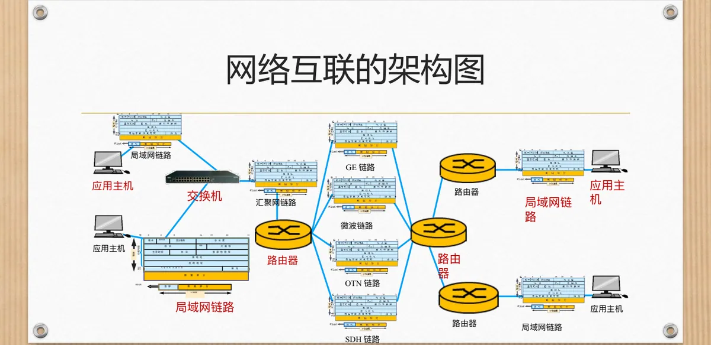
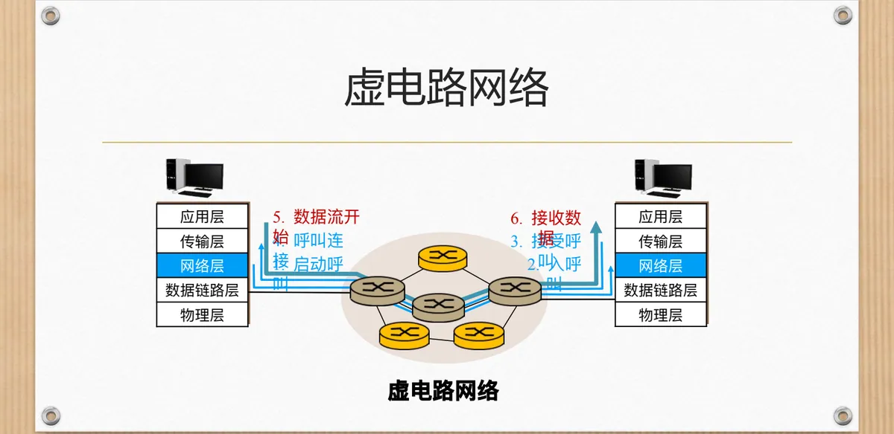
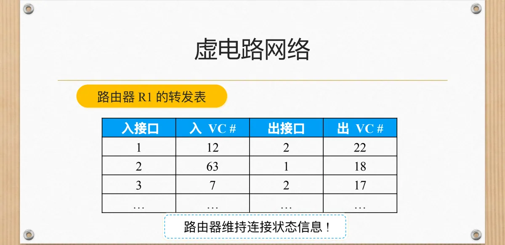
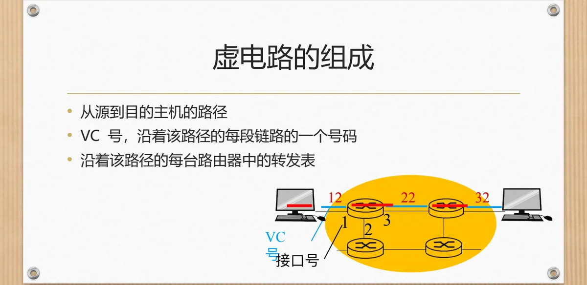
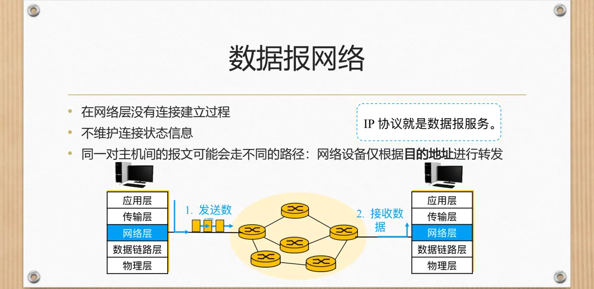

计算机通信与网络 · 第二版讲义 · 第 5 章 网络互联
5.1 网络互联基础
把两张网络接起来，看着只是拉一根线的小事，做起来却要面对一整套新问题：链路技术与编址方式可能不同，可达的路径不止一条，跨网传送还要考虑安全与可靠。网络互联就是在彼此独立的网络之上再架一层，让它们像一个网络那样工作。以下先看为什么需要互联、难在哪里，再看它的功能、架构与两种基本模型。
1. 为什么需要网络互联
先假设没有网络互联：一个局域网内的设备可以互相通信，出了这个局域网却寸步难行。而现实中的网络天生分散、技术各异，同一单位内部也可能存在多张独立网络，资源与信息却要在它们之间共享，因此需要把它们连起来，让任意两台主机之间都能交换数据。
互联的目标有四条：透明通信，用户无需关心底层网络结构；扩展性，支持大型网络的增长；安全性，防止数据泄露和非法访问；可靠性，即使部分网络故障仍能通信。
2. 网络互联为什么复杂
互联比「把线接上」复杂，是因为被连起来的网络差别太大：多种网络技术并存，以太网、Wi-Fi、光纤、5G 各有各的帧格式、速率与差错特性；协议与寻址方式不统一，同一次跨网通信前后两段可能按不同的地址标识主机，中间必须有人解释与转换；安全风险随范围扩大而增加，跨网传输需要加密与认证；路由也变得复杂：路径不再唯一，要在时延、带宽与费用之间权衡。
3. 网络互联的四项基本功能
面对这些困难，互联层被赋予四项功能。选路（Routing）决定数据走哪条路径，转发（Forwarding）把数据实际送往下一跳：选路的结果落实在路由表里，转发则查表执行。状态报告把网络状态的变化通知给相关部分。连接建立是可选项——只有互联层提供面向连接的服务时，才要在传数据之前先建立逻辑连接，虚电路就是这样的例子。互联层可能提供的服务还包括有连接与无连接服务、差错检测与纠正、服务质量保障 QoS（Quality of Service），提供哪些取决于怎样权衡网络与终端的能力。
4. 网络互联的总体架构
把互联放到一张图上看，它是分层的：应用主机通过局域网链路接入交换机，交换机把同一区域主机的流量汇接起来，再经汇聚网链路送往路由器；路由器之间可以用 GE（Gigabit Ethernet，千兆以太网）、微波、OTN（Optical Transport Network，光传送网）、SDH（Synchronous Digital Hierarchy，同步数字体系）等多种链路相连。主机接入、流量汇聚、骨干传输各司其职，路由器正处在它们的交界处，互联因此必须独立于具体的链路技术；路由器怎样查表转发，5.2 网络互联设备—路由器会专门交代。

5. 两种基本模型：虚电路与数据报
互联层要不要在传数据之前先打招呼？面向连接的服务需要握手：双方先建立连接、约定参数，再传输数据，结束时拆除连接，打电话是最熟悉的例子，代表是虚电路网络。面向无连接的服务无需握手：每个分组带着目的地址独自上路，网络只按地址把它往前送，代表是数据报网络。这也是第一版讲义 1.3 三种交换方式里两种思路的延伸。
6. 虚电路网络怎样工作
虚电路网络的服务像打电话：传数据之前先进行呼叫建立，在网络中建立一条逻辑连接，也就是虚电路；数据全部送完之后再断开连接。它的两个要点是：所有分组沿相同路径传输，每个分组只携带虚电路的标识、不必带目的主机的完整地址，因为路径在建立阶段就已确定；沿途每台路由器必须为进行中的连接维持连接状态信息，链路与路由器的资源（带宽、缓冲区）还可以分配给虚电路。呼叫建立的过程则是：源主机启动呼叫，请求沿路径传递形成入呼叫，被叫方接受呼叫后连接建立完成，数据流随即开始，被叫方接收数据。

7. 转发表与虚电路的组成
路由器靠转发表记住一条连接，以 R1 为例：从入接口 1 进入、携带 VC 号 12 的分组从出接口 2 送出，VC 号改写成 22；从入接口 2 进入、VC 号为 63 的分组改从出接口 1 送出，VC 号换成 18；从入接口 3 进入、VC 号为 7 的分组从出接口 2 送出，VC 号换成 17。「路由器维持连接状态信息」落到实处就是这张表。

整条虚电路由路径、沿途每一段链路的 VC 号、沿途每一台路由器中的转发表三部分构成。同一条连接在不同链路上使用不同的 VC 号，各段编号便可以独立分配、互不冲突。

8. 虚电路的通信过程与可靠传输
虚电路的生命周期分三个阶段：建立连接（Connection Setup）阶段，沿途为这条连接分配虚电路标识符，中间节点准备资源，如缓存、带宽；数据传输（Data Transfer）阶段，所有分组按建立好的路径传送，无需每个分组都带完整的目的地址；释放连接（Teardown）阶段，传送结束后拆除连接，归还占用的标识与资源。
因为连接是有状态的、资源可以预留，虚电路网络有条件把传输做得更可靠：分组可以有序到达（靠顺序号控制），可以进行端到端确认，中间节点可以预留资源避免拥塞，还可以提供服务质量 QoS 保障。把可靠性放在网络里完成，终端就可以做得简单，代价是网络要记录状态、维护连接。
9. 数据报网络
数据报网络在网络层没有连接建立过程，也不维护连接状态信息；同一对主机之间的报文可能走不同的路径，因为网络设备仅根据目的地址转发——IP 协议就是数据报服务。具体到一次转发：每个数据报都包含目的地址（IP 地址），路由器根据路由表查找下一跳，把它送往下一个网络节点，自己不保存上下文信息。好处是简单灵活、扩展性强，网络不必为每条连接分配资源，也不怕路由器中途失效；代价是顺序无法保证，丢包时也没有自动纠正机制，需要上层协议处理。

10. 数据报服务的转发表
数据报的转发依靠路由表，表里按目的地址的范围列出应当使用的链路接口。课件给出的示例如下：
| 目的地址范围 | 链路接口 |
|---|---|
| 11001000 00010111 00010000 00000000 到 11001000 00010111 00010111 11111111 | 0 |
| 11001000 00010111 00011000 00000000 到 11001000 00010111 00011000 11111111 | 1 |
| 11001000 00010111 00011000 00000000 到 11001000 00010111 00011111 11111111 | 2 |
| 其它 | 3 |
每一行其实是「前若干位相同、后若干位任意」的一段地址空间。路由表的每一项都是「一段目的地址对应一个出口」，路由器不必为每条连接保存状态，查一次表就能决定数据报从哪个接口送出；最后一行「其它」是兜底规则，地址不落在前面任何范围内时从接口 3 送出，网络不会因为表列得不全而无路可走。（课件原表第三行起始地址与第二行相同，两段范围有重叠，此处按原件照录。）
11. 虚电路与数据报的比较
两条路线的差别在于复杂性放在哪里：虚电路网络是聪明的网络、愚笨的终端，网络保证速率和服务质量，并维持连接状态；数据报网络是简单的网络、复杂的终端，互联不同类型的网络更容易，启用新服务也更快、更简单。
| 特性 | 数据报网络 | 虚电路网络 |
|---|---|---|
| 连接方式 | 无连接 | 有连接 |
| 路由方式 | 每包独立选路 | 所有包走同一路径 |
| 资源预留 | 否 | 是 |
| 顺序保证 | 否 | 是 |
| 开销 | 低 | 高（需建立连接） |
| 示例协议 | IP | ATM、MPLS、早期 X.25 |
表中示例协议值得注意：ATM、MPLS 与早期的 X.25 都用连接与预留换来稳定的速率和服务质量，IP 则用无状态的转发换来灵活的扩展。因特网选择数据报，把顺序与重传交给运输层补足，本章后面 5.3 网络互联中的数据转发、5.4 因特网控制报文协议 ICMP 与 5.5 网络互联中的选路都建立在这一选择之上。
本节小结
- 网络互联把分散、异构的网络连成一个整体，目标是透明通信、扩展性、安全性与可靠性；
- 复杂性来自技术并存、协议与寻址不统一、安全风险与路由问题；互联层因此提供选路、转发、状态报告与可选的连接建立，并可能提供差错检测与纠正和 QoS 保障；
- 虚电路网络面向连接：分组只带 VC 号、走同一条路径，沿途路由器维持连接状态并可预留资源，因而有顺序保证、端到端确认与 QoS 保障；
- 数据报网络面向无连接：路由器不保存上下文，每个数据报按目的地址查表转发，简单灵活、扩展性强，代价是顺序无法保证、丢包只能交给上层，IP 就是数据报服务；
- 两者的取舍是「聪明的网络、愚笨的终端」与「简单的网络、复杂的终端」：虚电路的示例协议是 ATM、MPLS 与早期 X.25，数据报的示例协议是 IP。